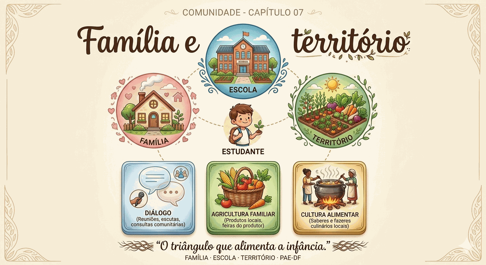

Família
e território
O triângulo que alimenta a infância no DF. Nenhuma ação de Educação Alimentar e Nutricional (EAN) terá impacto duradouro se não alcançar o lar.

Alcançar o lar.
Caderneta “Minha Aventura Alimentar”
A família registra com fotos, desenhos ou palavras o que a criança come em casa. A criança compartilha na turma.
Livro de receitas da turma
Cada família envia uma receita. A escola compila o livro — patrimônio cultural único daquela turma.
Piquenique saudável
Cada família traz um alimento in natura. Roda de conversa. “Descasque mais, desembale menos.”
Visita ao produtor da Região Integrada de Desenvolvimento do Distrito Federal e Entorno (RIDE)
Ver o alimento crescendo é transformador. Crianças entrevistam o agricultor. Conecte ao cardápio.
O DF como espaço pedagógico vivo.
Frutos nativos como linguagem
Pequi, buriti, cagaita, baru e jatobá ainda não compõem o cardápio do Programa Nacional de Alimentação Escolar do DF (PNAE-DF) — mas são currículo vivo: identificar, plantar mudas e contar histórias enraíza a criança no bioma.
Agricultura familiar
Os produtores que abastecem o PNAE do DF fazem parte do território educacional da criança. Cesta, visita, agricultor.
Do bairro à boca
Campo de experiência vivo, gratuito e próximo. Identificar in natura, conhecer o feirante e o ciclo do alimento.
Diversidade cultural
Brasília reúne famílias do Brasil todo. Sabores nordestinos, mineiros, goianos, sulistas — currículo vivo dentro da escola.